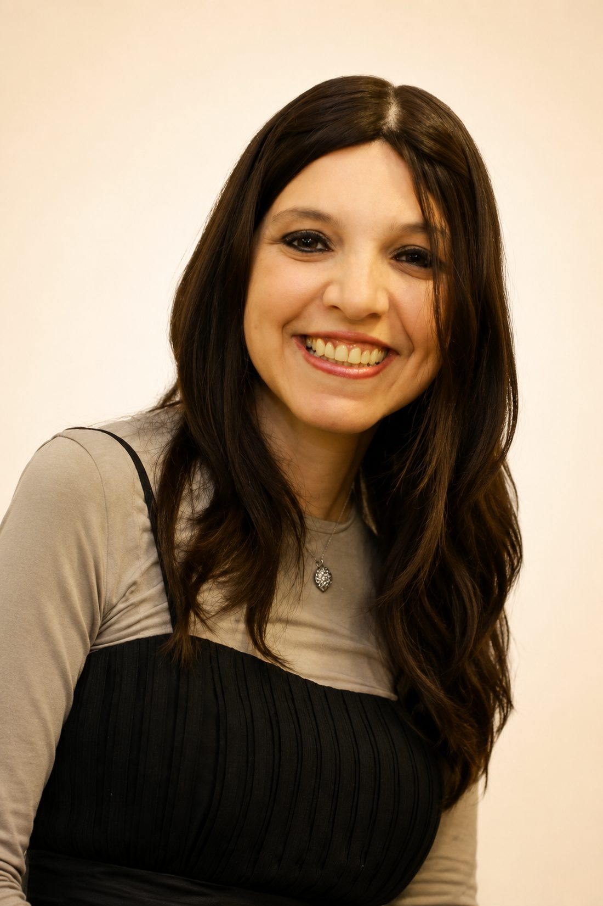
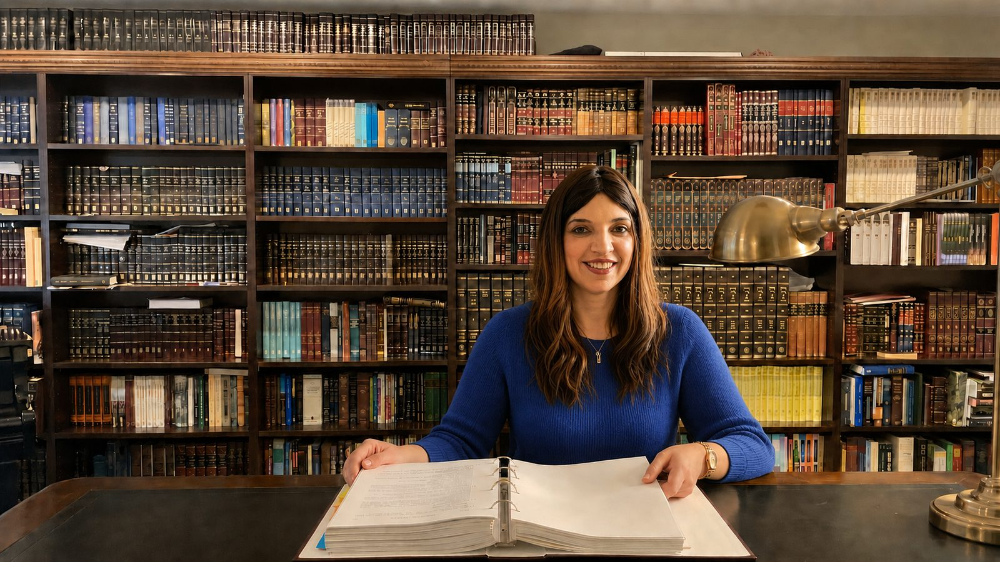
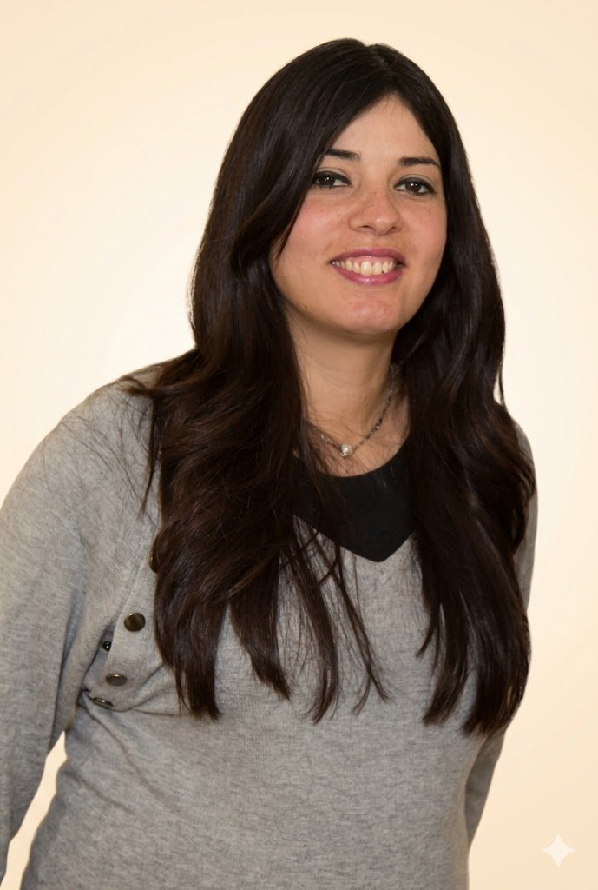

Dina Nejar
Une écoute formée, au service des familles.

Dina accompagne les parents et les familles depuis plusieurs années. Formée au coaching parental auprès d’Ella Mahut, puis spécialisée dans l’approche Shefer, elle travaille avec une approche à la fois humaine, concrète et structurée.
Écouter sans juger. Comprendre sans enfermer.
Chaque famille arrive avec son histoire, ses tensions, ses habitudes et ses blessures. Le rôle de Dina n’est pas de dire qui a raison ou tort, mais d’aider à lire ce qui se répète, à remettre de la clarté dans la relation et à retrouver une manière d’agir plus juste.

Une double base, écoute et méthode
Dina s’est formée au coaching parental auprès d’Ella Mahut, puis a approfondi son accompagnement avec l’approche Shefer. Cette double base lui permet d’allier écoute, compréhension des dynamiques familiales et ajustements concrets dans le quotidien.
Références : formation au coaching parental auprès d’Ella Mahut, spécialisation dans l’approche Shefer.

Une première voix pour vous accueillir.
Tsipora accompagne le premier contact, répond aux demandes et organise les rendez-vous avec discrétion, pour que l’entrée dans l’accompagnement soit simple et rassurante.
Faire connaissance lors d’un premier échange.
Gratuit et confidentiel, pour déposer ce qui se passe et voir si l’accompagnement peut vous aider.
Demander un premier échange →